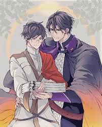

La fantasía y el sobrenatural BL (Boys' Love) son géneros inmensamente populares que combinan el romance masculino con magia, demonios, vampiros, reinos de cultivo o mundos mitológicos. Si buscas historias en este estilo, el género se divide en varios subgéneros fascinantes y accesibles.
Danmei (Novelas Chinas): Es el rey indiscutible de la fantasía sobrenatural BL. Suelen combinar romance épico, mitología y el género xianxia (cultivo espiritual y artes marciales mágicas). Obras cumbres como Mo Dao Zu Shi (El Fundador del Cultismo) y Tian Guan Ci Fu (La Bendición del Oficial del Cielo) son imperdibles y cuentan con adaptaciones a anime y live-action.Manhwas (Cómics coreanos): Destacan por tramas sobrenaturales oscuras, modernas o de época, con un estilo visual detallado. Dear Door (demonios y portales mágicos) o Blood Bank (vampiros) son excelentes ejemplos disponibles en plataformas digitales como Tappytoon o Lezhin.Mangas Japoneses: Historias más ligeras o de romance sobrenatural. Mangas como Super Lovers o el clásico Hybrid Child mezclan lo cotidiano con toques mágicos y criaturas fantásticas.Live-Action y Series (Dramas): Si prefieres ver la acción en pantalla, países como Tailandia y Taiwán han producido grandes éxitos recientes como I Feel You Linger in the Air (viajes en el tiempo) o Manner of Death (misterio)
